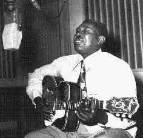
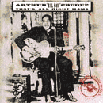

 |
Arthur "Big Boy" CRUDUP
(24 августа 1905, Форест, Миссиссиппи -
28 марта 1974, Носсавадокс, Вирджиния)
Артур "Биг Бой" КРАДАП - Американский певец, гитарист, харпист; автор многих песен, ставших блюзовыми стандартами.
|
Детство прошло на сельском юге США. Начал петь в церковном хоре. Профессиональную карьеру начал в гастролирующих вокальных ансамблях, исполняющих религиозную музыку. Оставил музыку, работал на ферме. Начал учиться играть на гитаре, когда ему было уже за тридцать - это нужда заставила искать дополнительный приработок, а в результате имя его вошло в историю. Бедность не позволяла купить инструмент, он "собрал" его из подручных материалов: проволока, доска, ящик. Выступал на пикниках и танцах. Обосновался в Чикаго в 1939. Зарабатывал деньги уличными выступлениями, жил на заброшенной автостоянке под железнодорожным мостом. В 1941 играл на домашней вечеринке преуспевавшего чикагского поп-блюзмена Тампа Реда (Tampa Red) столь удачно, что получил контракт с "расовым" лейблом "Блюберд" фирмы "Виктор" (Bluebird/Victor). Стиль его гитарной игры навсегда остался примитивным, однако ритм захватывал - и среди блюзменов именно Крадап стал непосредственным провозвестником рок-н-ролла. И главное, он сочинял простые, но неотразимо-выразительные песни, сразу принесшие ему успех и без которых теперь нельзя представить историю блюза и рок-музыки. Все-таки для широкого слушателя сами песни были лучше, чем авторское их исполнение. Крадап продавал авторские права, и песни его более известны в исполнении других.
В истории популярной музыки Артур Крадап поминается как автор первого хита Элвиса Пресли (Elvis Presley) "That's All Right, Mama". По слухам сам Король рок-н-ролла вернул долг чести, профинансировав запись альбома Артура Крадапа в 1959; но его столь часто обманывали музыкальные дельцы, что имя Крадапа остается примером бессовестной эксплуатации талантов афроамериканцев американским шоу-бизнесом в начале и середине ХХ века. За большую часть своих произведений Артур Крадап не получал авторских отчислений, которые, учитывая их популярность в то время, сделали бы его весьма состоятельным человеком. Он покинул музыкальную сцену; но был вновь "открыт" энтузиастами блюзового "revival" (возрождения); в конце 60-х он вновь стал записывать пластинки и выступать на крупнейших фестивалях, гастролировать в Европе и Австралии. Хотя к тому времени лучшие его творческие годы уже остались позади, Артур Крадап продолжал стабильно выступать до 1974, проведя последние гастроли с Бонни Рэйтт (Bonnie Raitt).
ВЭБ™'99
Дискография:
- Look On Yonder's Wall (Delmark LP, 1989, CD, 1997)
- That's All Right Mama (Compilation of Bluebird recordings) (Bmg/Rca CD, 1992)
- Give Me A 32-20 (Crown Prince LP)
 Crudup's Mood (Delmark LP)- Mean Ol' Frisco (Collectables LP, 1969. Collectables CD, 1991)
- Roebuck Man (Sequel CD, 1992)
- Mean Ol Frisco (Charly Blues Master Works CD, 1994)
- Volume 1 (1941-1946) (Document CD, 1994)
- Volume 2 (1946-1949) (Document CD, 1994)
- Volume 3 (1949-1952) (Document CD, 1994)
- Volume 4 (1952-1954) (Document CD, 1994)
- Meets The Master Blues Bassists (Delmark CD, 1994)
- Cool Disposition (Catfish CD, 1999)
|